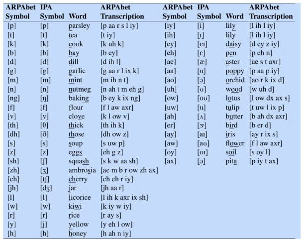
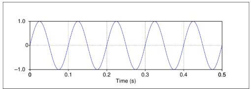
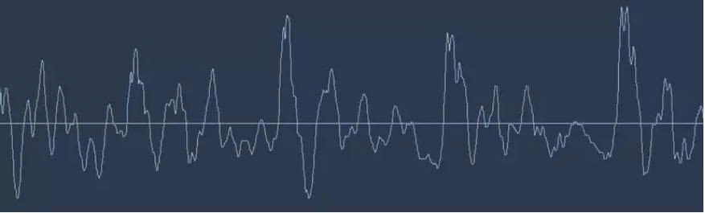
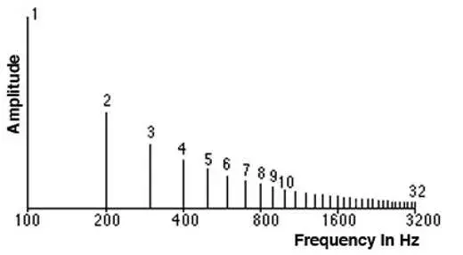
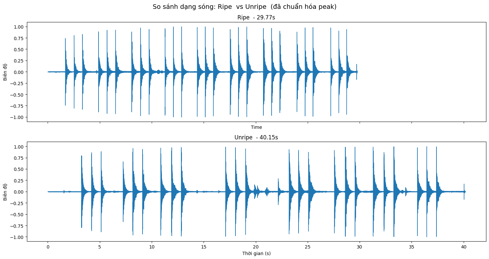
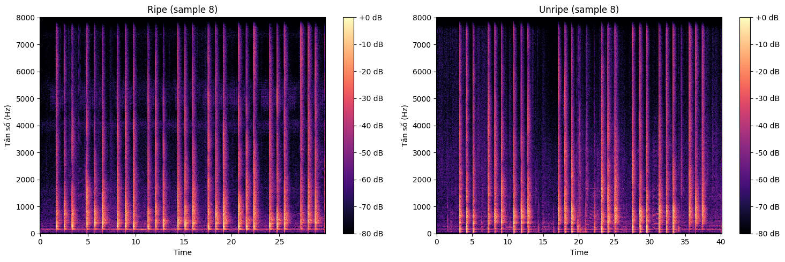

I. Khái niệm cơ bản về Ngữ âm học
Ngữ âm học (Phonetics) là ngành nghiên cứu các âm thanh lời nói trong ngôn ngữ, cách chúng được tạo ra bởi cơ quan phát âm, đặc tính âm học và cách chúng được số hóa, xử lý.
- Phone (Âm đoạn): Đơn vị âm thanh lời nói cơ bản, thường được biểu diễn bằng các ký hiệu trừu tượng để mô tả cách phát âm của một từ.
- IPA (Bảng ký âm quốc tế): Tiêu chuẩn biểu diễn ngữ âm dùng để ký âm cho các ngôn ngữ trên thế giới.
- ARPAbet: Một bảng chữ cái ngữ âm đơn giản sử dụng các ký tự ASCII để biểu diễn các âm đoạn tiếng Anh Mỹ, thường dùng trong tính toán.

II. Ngữ âm học cấu âm (Articulatory Phonetics)
Ngữ âm học cấu âm là môn học nghiên cứu cách các âm vị này được tạo ra khi các cơ quan cấu tạo âm vị khác nhau trong miệng, họng và mũi điều chỉnh luồng không khí từ phổi.
- Thanh môn (Glottis): Khoảng trống giữa hai dây thanh âm trong thanh quản.
- Âm hữu thanh (Voiced): Âm được tạo ra khi dây thanh âm rung động (ví dụ: [b], [d], [v]).
- Âm vô thanh (Unvoiced/Voiceless): Âm được tạo ra khi dây thanh âm không rung (ví dụ: [p], [t], [f]).
- Phụ âm (Consonant): Âm thanh được tạo ra bằng cách hạn chế hoặc chặn luồng không khí.
- Nguyên âm (Vowel): Âm thanh có ít sự cản trở luồng khí hơn, thường là âm hữu thanh, to hơn và dài hơn phụ âm.
- Vị trí cấu âm (Place of Articulation): Điểm cản trở luồng khí tối đa để tạo phụ âm (như môi, răng, nướu, ngạc).
- Phương thức cấu âm (Manner of Articulation): Cách luồng khí bị cản trở (như âm tắc - stop, âm mũi - nasal, âm xát - fricative).
- Âm tiết (Syllable): Sự kết hợp giữa một nguyên âm (hạt nhân) và các phụ âm xung quanh (phần đầu và phần cuối).
III. Prosody
Nghiên cứu về các khía cạnh ngữ điệu và nhịp điệu của ngôn ngữ.
- Trọng âm từ (Lexical Stress): Đặc tính phát âm của một từ, trong đó một âm tiết sẽ to hơn hoặc dài hơn các âm tiết khác.
- Nhấn mạnh (Pitch Accent): Sự làm nổi bật một từ hoặc âm tiết trong câu thông qua cường độ, độ dài hoặc sự thay đổi cao độ.
- Giai điệu (Tune): Sự lên và xuống của tần số cơ bản (F0) theo thời gian trong một câu nói.
IV. Speech Sound Waves (Sóng âm thanh)
-
Waves (Sóng)
Âm thanh là các dao động cơ học (biến đổi vị trí qua lại) của các phân tử, nguyên tử hay các hạt làm nên vật chất và lan truyền trong vật chất như các sóng. Âm thanh, giống như nhiều sóng, được đặc trưng bởi tần số, bước sóng, chu kỳ, biên độ và vận tốc lan truyền (tốc độ âm thanh).
Khi phân tích âm thanh thì ta dựa trên các hàm sin hoặc hàm sóng
\[ y = A \cdot \sin(2\pi f t) \]
Hình 2: Hàm sóng: chu kì T = 0.1s, Biên độ A = 1.0 - F là Tần số (Frequency): Số lần sóng âm lặp lại trong một giây, đơn vị là Hertz (Hz).
- A là Biên độ (Amplitude): Giá trị cực đại trên trục Y của sóng âm, liên quan đến áp suất không khí.
- Tần số cơ bản (F0): Tần số rung của dây thanh âm, biểu hiện dưới dạng cao độ (pitch) mà con người cảm nhận được.
Chu kỳ \(T\): liên hệ với tần số: \(T = \frac{1}{f}\).
-
Speech Sound Waves (Sóng âm thanh)
Đầu vào của bộ nhận dạng giọng nói, giống như đầu vào của tai người, là một chuỗi phức tạp các thay đổi về áp suất không khí. Những thay đổi về áp suất không khí này rõ ràng bắt nguồn từ người nói và được gây ra bởi cách thức cụ thể mà không khí đi qua thanh quản và thoát ra khỏi khoang miệng hoặc khoang mũi. Chúng ta biểu diễn sóng âm thanh bằng cách vẽ đồ thị sự thay đổi áp suất không khí theo thời gian.

Hình 3: Đồ thị sóng âm thanh -
Số hóa âm thanh
Âm thanh là dạng tín hiệu liên tục, máy tính của chúng ta thì làm việc với dữ liệu rời rạc. Đó là lý do chúng ta xử lý âm thanh thành dạng số để thuận tiện lưu trữ và truyền tải Chính là những file audio với định dạng mp3, wav chúng ta thường nghe trên máy tính hoặc điện thoại.
- Sample rate: tần số lấy mẫu trên giây (đơn vị hz). Sample rate càng cao, chất lượng càng tốt. Một bản nhạc có sample rate là 36000 Hz thì mỗi giây nhạc sẽ được lấy mẫu 36000 lần.
Sample rate trong nhận dạng giọng nói thường là 16000Hz.Về mặt toán học, để biến một sóng âm thanh thành số,
chúng ta chỉ cần ghi lại chiều cao của sóng tại các điểm cách đều nhau.
Tần số Nyquist: Tần số cao nhất mà bạn có thể ghi lại chính xác ki lấy mẫu tín hiệu (sampling rate):
fs: là tần số lấy mẫu
\[ f_{\text{Nyquist}} = \frac{f_s}{2} \] - Channels: mô phỏng âm thanh trong không gian, chanel càng cao, âm thanh càng sống động, giúp ta hình dung giống như cảm nhận được vị trí âm phát ra trong không gian.
- Stereo là một tập tin âm thanh tích hợp hai kênh âm thanh riêng biệt, chính là biểu tượng cho tai trái và tai phải người. Trong khi đó, Mono là một tập tin âm thanh đơn kênh.
- Bitrate: là đơn vị cơ bản để nói đến mức dung lượng mà thiết bị lưu trữ cần có để xử lý một giây âm thanh (đơn vị kbps - kilobit per second). Bitrate càng cao sẽ ghi nhận đầy đủ những loại âm thanh, chất lượng tập tin cũng cao hơn do đó dung lượng tập tin cũng sẽ lớn hơn. Ngược lại, bitrate càng thấp thì âm thanh bị lược bỏ càng nhiều nên chất lượng thấp hơn do đó dung lượng tập tin nhỏ hơn.
Các đặc trưng âm thanh
- Sample rate: tần số lấy mẫu trên giây (đơn vị hz). Sample rate càng cao, chất lượng càng tốt. Một bản nhạc có sample rate là 36000 Hz thì mỗi giây nhạc sẽ được lấy mẫu 36000 lần.
Sample rate trong nhận dạng giọng nói thường là 16000Hz.Về mặt toán học, để biến một sóng âm thanh thành số,
chúng ta chỉ cần ghi lại chiều cao của sóng tại các điểm cách đều nhau.
V. Phổ và miền tần số
1. Spectrum (Phổ)
Spectrum (Phổ): là biểu diễn các thành phần tần số khác nhau và biên độ của chúng tại một thời điểm.

Hãy tưởng tượng bạn nghe một đoạn nhạc. Âm thanh bạn nghe thấy thực chất là sự kết hợp của nhiều tần số khác nhau. Mỗi tần số này đóng góp một phần vào âm thanh tổng thể. Spectrum sẽ cho bạn biết những tần số nào đang có mặt trong âm thanh đó và cường độ của từng tần số.
2. Spectrogram (Phổ thời gian - tần số)
Spectrogram của một tín hiệu biểu diễn spectrum của nó theo thời gian, giống như một “bức ảnh” của tín hiệu. Spectrogram hiển thị thời gian trên trục x và tần số trên trục y. Nó giống như chúng ta chụp spectrum nhiều lần tại các thời điểm khác nhau, sau đó ghép chúng lại thành một biểu đồ duy nhất.


Spectrogram thể hiện:
- Trục ngang: Thời gian.
- Trục dọc: Tần số.
- Màu sắc: Biên độ (độ mạnh của tín hiệu).
Phổ này giữ lại được:
- Thông tin tần số.
- Cường độ của từng tần số.
- Cấu trúc hạ âm (nhận diện giọng nói, phân biệt nhạc cụ).
- Đặc trưng âm (feature).
- Sự thay đổi nhanh/chậm của tín hiệu.
Thang đo Mel (Mel scale) chuyển đổi tần số vật lý \(f\) (Hz) sang tần số cảm nhận \(m\) (mel):
VII. Kết luận
Ngữ âm học và xử lý tiếng nói là lĩnh vực giao thoa giữa ngôn ngữ học, âm học và xử lý tín hiệu. Nắm vững các khái niệm cấu âm, các đặc tính âm học và các công thức biến đổi (DFT, cửa sổ hóa, thang Mel, MFCC) là nền tảng để xây dựng các hệ thống nhận dạng giọng nói, tổng hợp tiếng nói và các ứng dụng xử lý giọng nói thông minh khác. Các đặc trưng MFCC cho phép chuyển đổi tín hiệu âm thanh thô thành dạng mà các mô hình học máy có thể khai thác.